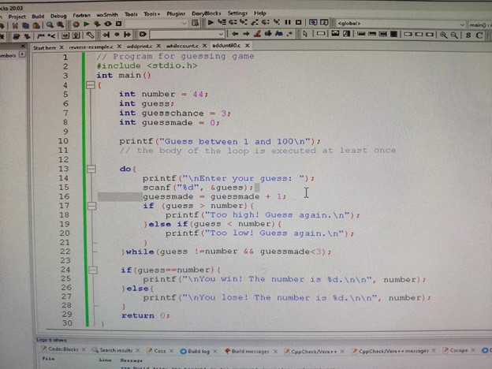

BASIC COMPUTER PROGRAMMING.

I learned that in almost every problem solving methodology the first step is defining or identifying the problem. A careful analysis of that need should involve both prospective users of the information (a user who seeks or may seek to enter into a contract for an additional service) and one or more trained system designers or programmers who can perceive the full nature of the need (how the computer can be used to respond to the need).